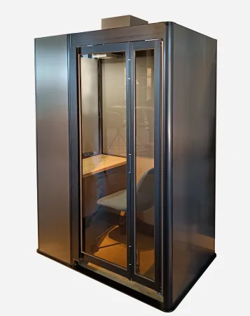

NAGAMURA ORIGINAL PRODUCT
省スペースに、集中できる個室を。
公衆電話ボックス製造で培った技術から生まれたテレワークブース。1人用、2人用、4人用を展開。最低天井高2100mmからの設置が可能なモデルがあり、最短2時間で設置できます。
各モデルの寸法・重量・電源・換気などの仕様、導入事例、料金シミュレーションは公式製品サイトをご覧ください。
Monobo 公式サイトで詳細を見る ↗NAGAMURA / TELEWORK BOOTH
TELEWORK BOOTH

NAGAMURA ORIGINAL PRODUCT
公衆電話ボックス製造で培った技術から生まれたテレワークブース。1人用、2人用、4人用を展開。最低天井高2100mmからの設置が可能なモデルがあり、最短2時間で設置できます。
各モデルの寸法・重量・電源・換気などの仕様、導入事例、料金シミュレーションは公式製品サイトをご覧ください。
Monobo 公式サイトで詳細を見る ↗